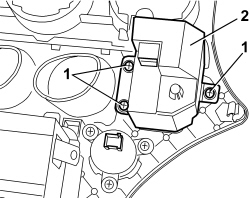

5505A31 ELECTRONIC KEY ACKNOWLEDGEMENT DEVICE - R. R.
- Path
- Procedures > 55 ELECTRICAL EQUIPMENT > 5505 INSTRUMENT/GAUGE ELECTRICAL CIRCUITS > 5505A MULTI-FUNCTION COMPONENTS > 5505A31 ELECTRONIC KEY ACKNOWLEDGEMENT DEVICE - R. R.
- Kind
- repair procedure (removal / refitting; the operation number is the code)
- Applies to
- all engines; all production periods
- Interactive page
- https://sloeber94.github.io/elrnDB/alfa/159/en/#/939010968
Applies to: all engines; all production periods
 Removing
Removing
 Refitting
RefittingRemove all the vents.
Op. 5010C34 AIR OUTLET ON CONSOLE - R+R
Remove the radio or, alternatively, the navigator.
Op. 5570T80 CAR RADIO EQUIPMENT - R+R
Op. 7040A17 AIR CONDITIONER CONTROLS
1. Undo the bolts.
2. Remove the Teg Reader.

Applies to: all engines; all production periods
Refitting
Removing- Check that the Teg Reader is not damaged.
- Position the device.
- Tighten the bolts.
Op. 7040A17 AIR CONDITIONER CONTROLS
Topics linked from this page (4)
- 5010C34 AIR OUTLET ON CONSOLE - R+R
- 5570T80 CAR RADIO EQUIPMENT - R+R
- 5580E ANTI-THEFT DEVICE
- 7040A17 AIR CONDITIONER CONTROLS
Topics that link to this page (15)
- A002 ALARM AND CENTRAL LOCKING NOT ACTIVATED
- B006 KEY CANNOT BE EXTRACTED FROM BLOCK
- K051 I.E. WARNING AND CODE WARNING LIGHT BOTH ON / ENGINE DOES NOT START
- 5505AF CHECK OF THE EFFICIENCY OF KEY ACKNOWLEDGEMENT DEVICE
- 7040A17 AIR CONDITIONER CONTROLS
- E1010 POWER SUPPLY SYSTEM - WIRING DIAGRAM
- E1010 POWER SUPPLY SYSTEM - COMPONENT LOCATION
- E1050 CAN CONNECTION LINES - WIRING DIAGRAM
- E1050 CAN CONNECTION LINES - COMPONENT LOCATION
- E5010 STARTING AND RECHARGING - WIRING DIAGRAM
- E5010 STARTING AND RECHARGING - COMPONENT LOCATION
- E7010 CODE - WIRING DIAGRAM
- E7010 CODE - COMPONENT LOCATION
- E7065 ELECTRIC STEERING LOCK - WIRING DIAGRAM
- E7065 ELECTRIC STEERING LOCK - COMPONENT LOCATION